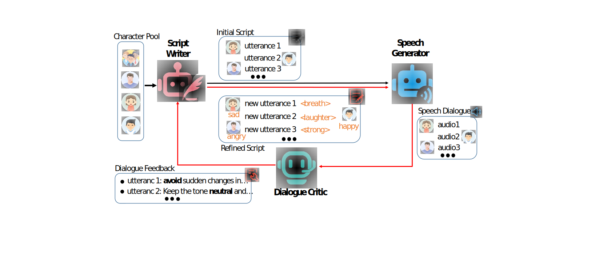

Can Audio Language Models Listen Between the Lines? 
A Study on Metaphorical Reasoning via UNSPOKEN
Abstract.
Speech synthesis is essential for advancing human-computer interaction. However, current datasets for training speech synthesis models often suffer from high construction costs, limited role diversity, and poor emotional expression. In this paper, we propose DialogueAgent, a hybrid agent-based speech synthesis framework for multi-party dialogue. DialogueAgent employs three specialized agents—Script Writer, Speech Generator, and Dialogue Critic—to collaboratively generate and refine dialogues. By iteratively adapting the script to better fit the conversation scenario through speech review and feedback, the framework enhances emotional expressiveness and paralinguistic features in synthesized speech. Using this framework, we introduce MultiTalk, a bilingual, multi-party, multi-turn speech dialogue dataset covering diverse topics. Additionally, we present two metrics tailored to dialogue-level speech evaluation to measure the emotional expressiveness and naturalness of turn-taking. Extensive experiments demonstrate the effectiveness of our framework and the high quality of the MultiTalk dataset.
This page is intended solely for the purpose of research demonstration.
Overview

Q&A
Question 1:
What is the implied meaning when the speaker says "it's raining cats and dogs"?
Options:
A. It's raining very heavily 
B. Animals are falling from the sky
C. The weather is unpredictable
D. The speaker is exaggerating
E. There's a pet parade happening
Question 2:
What emotion is the speaker expressing in this audio clip?
Options:
A. Anger
B. Excitement
C. Sadness
D. Fear
E. Confusion
Question 3:
What is the main topic of this conversation?
Options:
A. Weather forecast
B. Family vacation
C. Career planning
D. Shopping plans
E. Weekend activities
Question 4:
What is the speaker's attitude towards the situation?
Options:
A. Indifferent
B. Hostile
C. Nervous
D. Optimistic
E. Skeptical
Question 5:
What is the appropriate response to this conversation?
Options:
A. Change the subject
B. Disagree strongly
C. Show understanding and support
D. Remain silent
E. Express doubt
Ethics Statement
Given the ability of DialogueAgents to synthesize speech while preserving the speaker's identity, potential risks of misuse, such as deceiving voice recognition systems or impersonating specific individuals, may arise. In our experiments, we operate under the assumption that users willingly agree to be the designated speaker for speech synthesis. In the event of the model's application to unknown speakers in real-world scenarios, it is imperative to establish a protocol ensuring explicit consent from speakers for the utilization of their voices. Additionally, implementing a synthetic speech detection model is recommended to mitigate the potential for misuse.